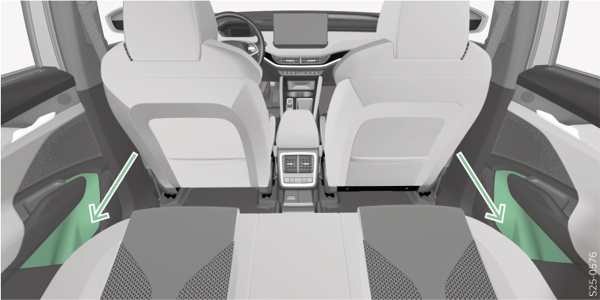

<!-- topicId: fa0a2ed8b13e0284e9456b2c46cd80f2_3_fr_FR | type: topic -->
<h1>Vue d’ensemble</h1>
<html data-dyxml-version="2"><div lang="fr-FR"><div class="topic-content"><section data-type="topic-allgemein" data-dl-contains="block" id="ID_fdfc375d7b9742f5ac1445250efae2c5-52405034c67d3af1ac144525757ad7c2-fr-FR"><p id="ID_646e96617b9742f5ac1445257a1069dc-52405034c67d3af1ac144525757ad7c2-fr-FR"></p><div data-role="block" data-type="block" id="ID_58e55ea97b9742f5ac1445253c19ed1c-52405034c67d3af1ac144525757ad7c2-fr-FR" hasIllu="true"><div data-type="illu" id="ID_718e214135fe11ef9f6fefa87e99f0e6-52405034c67d3af1ac144525757ad7c2-fr-FR"><div data-class="vw-layout-narrow" data-dl-wrapper="figure" id="d2172149e34"><figure id="ID_966c6c01b61f4ad9ac1445253bd795c9-52405034c67d3af1ac144525757ad7c2-fr-FR" data-role="" data-type="" data-position=""><div><a data-fancybox="group" media-link="" class="fancybox" data-href="../media/img7842c837a0c7152fac144525247c4154_1_--_--_PNG_3x.png" data-options="{&#34;buttons&#34;:[&#34;fullScreen&#34;, &#34;thumbs&#34;, &#34;close&#34;],&#34;hash&#34;:false}"></img></a></div></figure></div></div></div><div data-role="block" data-type="block" id="ID_57cf2d7238486d370ad95eab33bbbc9e-52405034c67d3af1ac144525757ad7c2-fr-FR"><p data-type="p" id="ID_741878d2518d11e9be2cb59f315bdda1-52405034c67d3af1ac144525757ad7c2-fr-FR">L’étagère est prévue pour ranger der bouteilles avec un contenu max. de 1,5 l.</p></div><div></div></section></div></div></html>